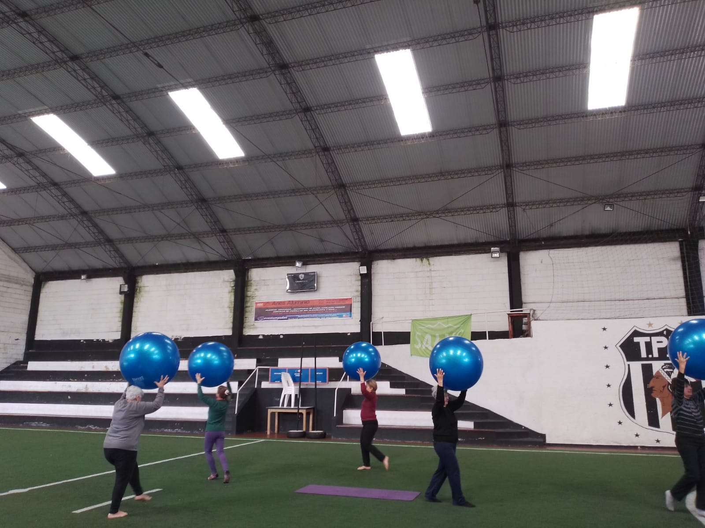
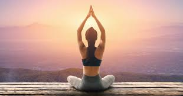

Yoga
¿Qué es el Yoga?
El yoga es una antigua práctica física, mental y espiritual que tiene sus raíces en la India. Combina posturas físicas, técnicas de respiración, meditación y filosofía para promover el equilibrio y la armonía en el cuerpo y la mente. El objetivo principal del yoga es alcanzar un estado de unión entre el cuerpo, la mente y el espíritu.
En el yoga, se realizan una serie de posturas físicas llamadas asanas, que se combinan con técnicas de respiración controlada, conocidas como pranayama. Estas posturas y técnicas de respiración se realizan de manera consciente y se enfocan en fortalecer y estirar el cuerpo, mejorar la flexibilidad, aumentar la conciencia corporal y promover la relajación.
Además de las posturas y la respiración, el yoga también incluye prácticas de meditación y atención plena para calmar la mente y cultivar la concentración y la claridad mental.


BENEFICIOS DEL YOGA
Algunos de los beneficios comunes de esta disciplina:
Los beneficios del yoga son numerosos y abarcan tanto el aspecto físico como el mental. A nivel físico, el yoga puede ayudar a mejorar la fuerza muscular, la flexibilidad, la postura y la circulación. También puede reducir la tensión muscular, aliviar el dolor, mejorar la calidad del sueño y fortalecer el sistema inmunológico.
A nivel mental y emocional, el yoga puede ayudar a reducir el estrés, la ansiedad y la depresión. Promueve la calma y la relajación, mejora la capacidad de concentración y favorece una mayor conexión entre la mente y el cuerpo. Además, el yoga fomenta una actitud de autocompasión, aceptación y equilibrio en la vida cotidiana.
• YOGATERAPIA
La yogaterapia es una disciplina que combina los principios del yoga con enfoques terapéuticos para ayudar a tratar y gestionar diferentes condiciones físicas, emocionales y mentales. Se utiliza como complemento a la medicina convencional y se adapta a las necesidades individuales de cada persona.
En la yogaterapia, se aplican las técnicas del yoga, como asanas (posturas físicas), pranayama (técnicas de respiración), meditación y relajación, de manera específica y personalizada para abordar problemas de salud o desequilibrios. Se trabaja en colaboración con un terapeuta de yogaterapia que tiene conocimientos profundos sobre anatomía, fisiología y las aplicaciones terapéuticas del yoga.
El objetivo de la yogaterapia es mejorar la salud física, emocional y mental de la persona. Se puede utilizar para tratar una amplia variedad de condiciones, como el estrés, la ansiedad, la depresión, el dolor crónico, los trastornos del sueño, lesiones musculoesqueléticas, trastornos respiratorios, enfermedades crónicas, entre otros.
Durante una sesión de yogaterapia, el terapeuta guía al individuo a través de prácticas específicas adaptadas a sus necesidades. Esto puede incluir la realización de posturas suaves y terapéuticas, técnicas de respiración específicas, visualizaciones, meditaciones y relajación profunda. También se brinda orientación sobre la incorporación de hábitos saludables en el estilo de vida diario.
La yogaterapia se basa en la idea de que el cuerpo y la mente están interconectados, y al trabajar en ambos aspectos, se puede promover la curación y el bienestar holístico. Se enfoca en el autoconocimiento, el autocuidado y el fortalecimiento del individuo, capacitándolo para ser parte activa en su proceso de sanación.
• ESFEROKINESIS
La esferokinesis es una técnica de movimiento que se enfoca en el uso consciente y controlado de una esfera, como una pelota o un balón, para promover el equilibrio, la coordinación, la concentración y la conciencia corporal. Esta disciplina combina elementos del yoga, la danza y la terapia física para mejorar la conexión mente-cuerpo y fortalecer el cuerpo de manera integral.
Durante una sesión de esferokinesis, se utilizan movimientos suaves y fluidos con la esfera para desarrollar habilidades físicas y cognitivas. Se pueden realizar ejercicios como lanzar, atrapar, rodar y girar la esfera, tanto en el suelo como en el aire, a medida que se trabaja en el control del equilibrio y la postura. La esfera se utiliza como una herramienta que proporciona resistencia y estabilidad, desafiando al cuerpo a adaptarse y mejorar su rendimiento.
La esferokinesis no solo trabaja los aspectos físicos, sino que también tiene beneficios mentales y emocionales. Al concentrarse en los movimientos y en mantener una conexión consciente con la esfera, se mejora la atención, la concentración y la conciencia corporal. Además, esta disciplina puede ayudar a liberar tensiones, aumentar la relajación y promover una sensación de bienestar general.
Esta técnica es utilizada por personas de diferentes niveles de condición física y puede adaptarse a las necesidades individuales. Es adecuada para aquellos que buscan mejorar su equilibrio, coordinación, fuerza y flexibilidad, así como para quienes desean experimentar una forma creativa y lúdica de movimiento.
Es importante mencionar que la esferokinesis puede ser practicada tanto de manera individual como en grupo, y puede integrarse en sesiones de acondicionamiento físico, clases de danza o terapias de movimiento.
• HATHA YOGA
El Hatha Yoga es una forma tradicional de yoga que se originó en la India hace siglos.
El término "Hatha" se deriva de dos palabras en sánscrito: "ha", que significa sol o energía vital, y "tha", que significa luna o mente. El Hatha Yoga se enfoca en equilibrar y unir estas dos energías opuestas: la energía activa y masculina (ha) y la energía receptiva y femenina (tha).
En la actualidad, el Hatha Yoga se practica en todo el mundo y ha ganado popularidad debido a sus beneficios físicos, mentales y espirituales. Se considera una forma accesible de yoga, adecuada para personas de diferentes edades y niveles de condición física. La práctica del Hatha Yoga puede adaptarse a las necesidades individuales y brinda una oportunidad para equilibrar y fortalecer el cuerpo, calmar la mente y cultivar la conexión con el ser interior.